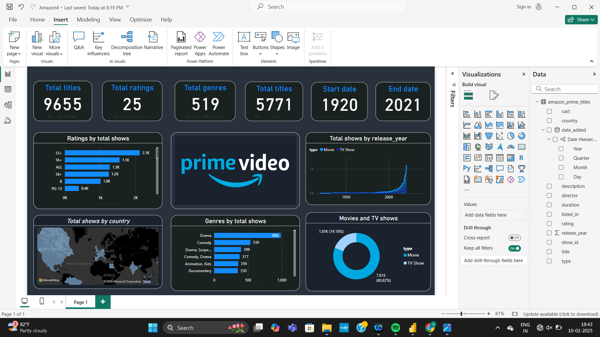
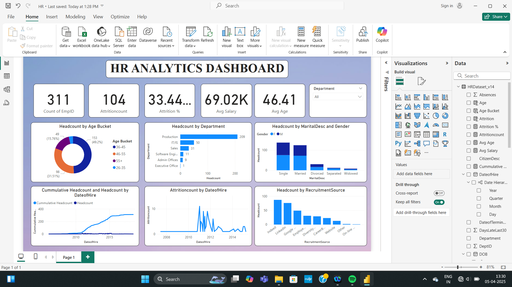

My Projects

Amazon Prime Video Library Dashboard
Built an interactive Power BI dashboard to analyze Amazon Prime content based on genre, rating, and release year. Implemented DAX and Power Query with dynamic slicers and filters to simulate viewer preferences and support content strategy decisions.

HR Analytics Dashboard
Created an HR dashboard in Power BI to evaluate metrics such as attrition rates, gender diversity, and departmental distribution. Utilized Excel for data preparation and Power BI for uncovering trends in employee turnover and recruitment planning.